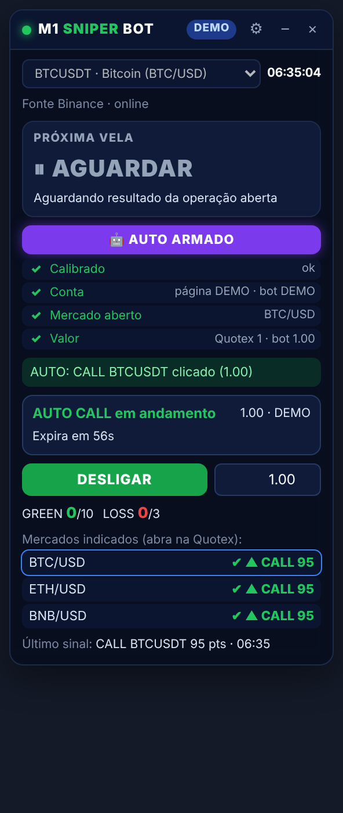

Análise de candles M1 com gestão de risco obrigatória
É uma extensão do Chrome que coloca um painel pequeno e arrastável sobre a Quotex. O painel combina EMA 9/21/200, RSI 14, ADX 14, Bollinger 20/2 e Price Action, dá uma nota de 0 a 100 e sugere CALL ou PUT com expiração de 1 minuto. O painel inclui um gráfico TradingView ao vivo (BINANCE, M1) com o mesmo feed usado nos cálculos. Quem abre a operação é sempre você.
Baixar extensão (.zip)Versão 1.4.0 · Chrome / Edge / Brave (Manifest V3)

Monitor ao vivo
Este é o motor da extensão rodando no seu navegador com candles reais da Binance. Ele é só leitura: não há contadores nem confirmação de entradas, que ficam na extensão.
Indicadores (último candle fechado)
Sinais desta sessão
| Horário | Ativo | Direção | Nota | Resultado (Binance) |
|---|
Instalação
- Baixe o m1-sniper-bot.zip e extraia o arquivo em uma pasta.
- Abra
chrome://extensionse ative o Modo do desenvolvedor. - Clique em Carregar sem compactação e selecione a pasta extraída (a que contém
manifest.json). - Abra a Quotex em conta DEMO, M1, no mesmo ativo escolhido no painel (ex.: BTC/USD ↔ BTCUSDT).
- O painel aparece em cima do gráfico. Se não aparecer, ou para mostrar e esconder, clique no ícone da extensão (funciona em qualquer endereço da Quotex).
- Clique em LIGAR. A caixa PRÓXIMA VELA mostra cada indicador M1 com ✓/✗ e a prévia da vela em formação. Quando a vela fecha e tudo confirma, aparece ✔ CONFIRMADO CALL/PUT para a vela seguinte, com expiração de 1 minuto.
- Manual: abra a operação você mesmo e clique em ENTREI. Automático (opcional): em ⚙ calibre só os botões Comprar e Vender da Quotex: ativo, %, tempo e valor são lidos sozinhos do painel de operação (o clique da calibração é bloqueado), deixe a expiração em 1 min e clique em 🤖 AUTO. O bot só clica no mercado aberto, na conta e no valor conferidos, e desarma sozinho na trava diária, na virada do dia ou se algo falhar.
- Depois de 1 minuto, registre GREEN, LOSS ou EMPATE conforme o resultado na Quotex.
Gestão de risco (fixa)
- 10 GREEN no dia: META DIÁRIA ATINGIDA, painel bloqueado até o dia seguinte.
- 3 LOSS no dia: LIMITE DE LOSS ATINGIDO, painel bloqueado até o dia seguinte.
- Sem Martingale: depois de um LOSS, o valor não pode subir no mesmo dia.
- Uma operação por vez, sem sinais duplicados, e sinais vencidos são descartados.
- Contadores preservados ao fechar o navegador. A trava é reaplicada sempre que o estado é carregado.
- O modo REAL só é liberado com 100 operações DEMO em 5 ou mais dias, acerto acima do break-even + 3 p.p., resultado positivo, drawdown ≤ 10 entradas e confirmação escrita.
Backtest e limitações
Backtest de 7 dias com dados reais da Binance, sem antecipação de candles (payout 0,85, break-even 54,1%):
| Ativo | Sinais | Acerto | Resultado |
|---|---|---|---|
| BTCUSDT | 72 | 66,2% | +15,25 entradas |
| ETHUSDT | 49 | 50,0% | −3,60 entradas |
| SOLUSDT | 44 | 38,5% | −11,25 entradas |
| Total | 165 | 54,2% | +0,40 entradas |
No total, o resultado ficou no zero a zero. Uma semana de dados não comprova vantagem estatística. Valide na DEMO antes de qualquer decisão. A detecção do ativo e da conta (DEMO/REAL) na página da Quotex é feita pelo título e pela URL e não foi verificada na Quotex real.